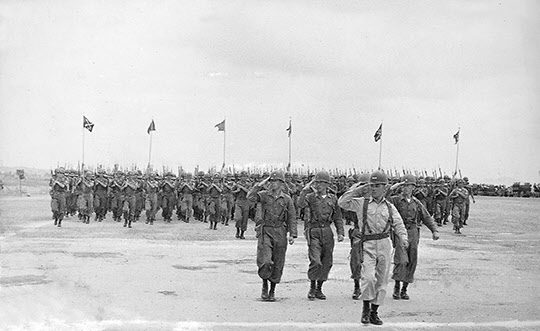
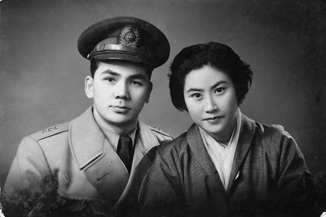

보도일 2014-08-06출처 조선일보 프리미엄조선 연재
1958년 국군의 날 기념행사에서 시가행진 부대를 지휘하여 25사단 발전에 크게 기여했던 박태준은 1959년 3월 육군본부 인사처리과장으로 부임하여 그해 8월 미국 연수를 다녀온다. 9월 17일 귀국. 자리는 그대로였다. 장교들이 ‘요직’이라 부러워하는 꼭 그만큼 그에게는 따분한 자리였다. 하지만 미국 연수 덕분에 석 달쯤 남은 비운의 1950년대를 거뜬히 버텨낼 수 있을 것 같았다.

드디어 1960년대의 막이 올랐다. ‘대망의 60년대’란 말을 썼다. 상투적인 그 ‘대망’은 두 갈래였다. 이승만의 집권이 안정적으로 지속되어야 한다는 기득권 세력의 집요한 욕망, 그리고 전쟁과 부패와 독재의 그늘을 걷어내야 한다는 시대적 당위.
바지런한 사내들이 먹을 갈아 ‘입춘대길(立春大吉)’을 쓰는 절기였다. 인사서류를 만지는 박태준의 어깨를 툭 건드리는 손이 있었다. 약간 놀라며 고개를 돌린 그가 벌떡 일어섰다. 박정희였다.
“좋은 자리에 와 있구나.”
“골치 아파 죽겠습니다.”
박태준의 넌덜머리 표정에 박정희가 피식 웃었다.
“부산 안 갈래?”
쿡 찌르듯 내민 제안. 박태준은 알고 있었다. 박정희가 부산에 신설된 군수기지사령부 사령관으로 옮겨간다는 것을. 그가 애타게 기다려온 일처럼 대뜸 반색을 했다.
“갈 수만 있다면 당장 내려가겠습니다.”
“이 사람아, 부산은 좋아. 회도 많고 술도 많아.”
“우리 인사참모부장께 허락을 받아주십시오.”
1960년 2월초, 회도 많고 술도 많은 부산으로 박정희를 따라 내려가는 박태준의 발걸음은 가벼웠다. 그것은 기쁨과 설렘이었다. 육사 생도 시절부터 존경해온 선배를 직접 모신다는 기쁨, 토이기의 케말 파샤라는 이름처럼 뭔가 큰일을 도모하게 될지 모른다는 설렘.
어린 딸을 안고 나서는 박태준의 아내(장옥자)도 발길이 사뿐사뿐했다. 오랜만에 고향방문을 가는 기분이었다. 1954년 12월에 육군사관학교 교무처장 박태준과 결혼하여 이리저리 남편의 근무지를 따라 숱하게 살림 보따리를 꾸렸는데 이번에는 또 얼마나 머물게 될지 몰라도 부모형제들이 살고 있는 부산으로 간다니까 재볼 것도 하나 없이 무조건 좋았던 것이다.

박정희 사령관의 부산군수기지사령부 참모들은 ‘박정희의 사람들’로 짜였다. 참모장 황필주-김용순 준장, 인사참모 박태준 대령, 작전참모 김경옥 대령, 헌병부장 김시진 대령, 비서실장 윤필용 중령, 공보실장 이낙선 소령. 이들은 박정희가 정권을 잡은 뒤에도 대통령의 측근에서 보좌하게 된다.
박정희가 군기(軍紀) 담당이기도 한 박태준에게 두 가지 지시를 내렸다. 한 가지는 특이한 것이었다.
“후방부대는 일선과 멀리 떨어져 있고 대민(對民) 접촉이 많아서 적절한 훈련을 통해 규율을 확립하도록 해야 하니 그에 맞는 훈련 작전계획을 세우고, 우리 예하 부대와 부산 시민들이 함께 참여하는 체육대회를 동대신동 운동장에서 개최하는 계획을 세워 봐.”
‘특이한 것’이란 시민과 함께하는 체육대회였다. 왠지 그것이 박태준은 조금도 엉뚱하게 여겨지지 않았다. 오히려 즐거웠다.
그리고 며칠이 지났다. 박태준은 참모들끼리 모이는 술자리에 나갔다. 이튿날 아침에 사령관에게 보고해야 할 일거리가 부담스러워서 빠지고 싶은 생각이 스쳐갔으나 동료들과의 뜨거운 의기투합 자리를 차마 뿌리칠 수가 없었고 한국 육군의 선후배와 동기들이 손에 꼽아주는 ‘주호(酒豪)’의 명예에 구정물 같은 것이 튀게 할 수도 없는 노릇이었다. 그런데 술자리가 수상쩍게 돌아갔다.
묘하게도 술잔이 자꾸만 자신에게 집중되는 것이었다. 술을 피하거나 마다할 박태준이 아니지만 주는 대로 그냥 받아 마시다간 어느 순간인지 모르게 낭패를 당할 것도 같았다. 급한 대로 계략을 세워야 했다.
‘주는 대로 다 받아 마시되, 돌려주는 잔은 약해 보이는 상대부터 하나씩 차례로 집중 공격한다.’
박태준은 자신의 긴급 계략에 대해 농담을 섞어 “내가 군기대장이니 금야(今夜)의 군기와 같은 주도(酒道)로 삼고 모두가 사수하자”고 제안하여 만장일치의 흔쾌한 동의를 받아냈다. 그리고 곧장 실행에 들어갔다. 그는 다섯 개의 술잔이 차례차례 건너오면 그걸 빠짐없이 다 비우고 찍어둔 한 사람에게만 다섯 개의 술잔을 차례차례 넘겨주었다. 그 계략은 적중이고 만점이었다. 그가 찍어둔 순서대로 한 사람씩 나가떨어졌다.
‘박태준 뻗게 만들기’ 술자리에서 거꾸로 최후 생존자로 남은 그에게 주어진 당장의 임무는 뻗은 동료들을 숙소까지 안전하게 배달해주는 일이었다. 소란스럽지 않게 동료들을 지프에 태워 보낸 그는 먼저 사무실로 갔다. 자정이 임박했으나 잠자리에 들어갈 형편이 아니었다. 장비소요 계획서를 완성하여 새날 아침 8시에 사령관에게 보고하기 위해서는 찬물로 세면부터 하고 책상에 앉아야 했다.
이튿날 아침에 인사참모가 보고서를 끼고 사령관실로 들어섰다. 박정희는 반가움과 놀라움을 감추지 못하는 표정이었다.
“자네는 무쇠덩어린가? 어젯밤에 뒤치다꺼리까지 했다며?”
“벌써 보고를 받았습니까?”
박정희가 빙긋이 웃었다. 비로소 박태준은 간밤에 자신이 ‘사령관의 계략’에 걸렸다가 긴급히 세웠던 그 ‘주도(酒道)의 계략’으로 무사히 벗어났다는 점을 깨달았다. 사실이었다. 그것은 박정희의 박태준에 대한 마지막 시험이었다. 인사참모에게는 내일 아침 8시에 주요업무에 대해 보고하라는 지시를 내리고, 다른 참모들에게는 ‘오늘밤 박태준에게 술을 실컷 먹여서 뻗게 해보라’고 했던 것이다.
한가로운 후방부대에서 거사를 꿈꾸는 박정희에게는 무엇보다 ‘사람’이 중요했다. 신념과 포부의 차원에서, 능력과 신의의 차원에서 ‘진짜 동지’를 발굴해야 했다. 이제 박태준은 박정희의 관문을 완전히 통과한 동지가 되었다.

박태준에 대한 인물평을 조갑제는 『박정희』에서 이렇게 쓰고 있다.
<박태준 대령은 그때 한국군 안에서 자라나고 있었던 새로운 엘리트 집단을 대표하고 있었다. 미군 보병학교와 행정학교에 두 번 유학하여 현대적 전술학뿐 아니라 조직관리학을 배운 그는 1956년 수색에서 국방연구원(현 국방대학원의 전신)이 개교하자 국가정책 담당 교수가 되었다.
그때 교수부장은 유병현(합창의장, 주미 대사 역임) 대령, 경제정책 담당 교수는 이훈섭(철도청장 역임) 대령과 최영두(군정내각통제실 요원) 대령이었다. 이 학교는 고급 장교들에게 국가전략, 경제, 행정에 대한 폭넓은 지식과 시각을 제공했다. 이들은 5·16 뒤 국정운영에서 이때 얻은 지식을 활용할 수 있었다.>
위의 인용에 나오는 박태준의 두 번째 미국 연수(미 육군부관학교 3개월)는 ‘부산군수기지사령부 사령관 박정희와 그의 참모들’이 거사 획책의 의심을 받아 부산에서 여섯 달도 버티지 못하고 흩어진 직후에 이뤄지는데, 박정희가 거사의 밑그림을 그려나간 부산의 그 길지 않은 날들은 박정희가 박태준을 진심으로 아끼며 신뢰하고 박태준이 박정희를 진심으로 신뢰하며 존경하여 두 사내를 완전히 하나로 묶어주는 시간이 되었다.
박태준은 인생의 황혼을 거니는 때에 1960년 상반기의 부산 시절을 소년처럼 밝은 표정으로 회고한 적이 있었다.
“부산에서 많이 마셨소. 그분이 나를 꼬실 때 하셨던 말씀 그대로 회도 많고 술도 많은 시절이었소. 육영수 여사는 서울에서 내려오실 때마다 내가 인사참모가 아니라 술참모인가, 이러셨을 거요. 육 여사는 부산 시절에 우리가 워낙 마셨던 기억을 가지고 계셔서 그 뒤에 청와대에서 술상을 마련해주실 때도 입가엔 미소를 짓고는 나를 살짝 홀기셨지…. 그때 부산에선 4‧19비상계엄 관리도 있었고, 여러 모로 격변이었소.
하긴 해방 이후만 봐도 우리 세대에게 언제 격변 아닌 때가 있었겠소마는, 부산 시절을 통해서 그분과 나는 서로 눈곱만큼도 의심하지 않는 하나로 맺어졌고, 그 약속 그대로 여기까지 짧은 일생을 완주해온 거요.”
박정희와 박태준, 두 사내는 부산에서 대체 어떤 약속을 했을까?